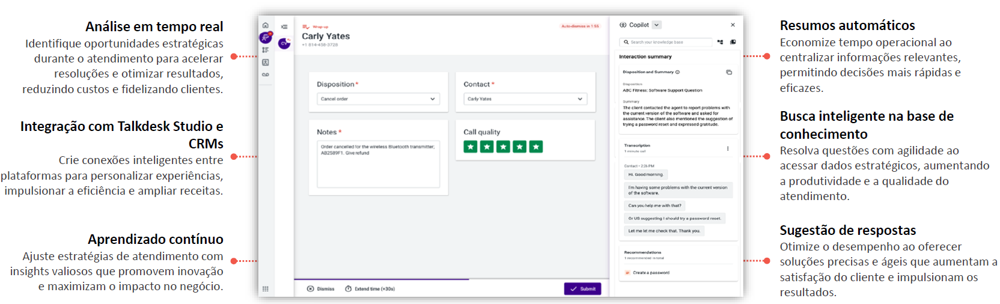

O Copilot utiliza IA para transcrever chamadas em tempo real, sugerir respostas contextuais e ajudar os agentes com artigos relevantes, proporcionando uma experiência mais ágil e personalizada.
Captura e processa conversas de voz e texto para identificar intenções, sentimentos e contexto da interação.
Gera automaticamente sugestões baseadas no histórico do cliente, reduzindo o tempo de resposta dos agentes.
Cria resumos detalhados das interações para agilizar a finalização de chamadas e registros no CRM.
Localiza artigos e informações relevantes para ajudar os agentes a resolverem dúvidas rapidamente.
Integra-se ao Talkdesk Studio e CRMs para personalizar recomendações e fluxos de atendimento.
Ajusta respostas e sugestões com base em feedbacks e interações anteriores.
Compreender as necessidades dos usuários para configurar sugestões inteligentes e transcrições em tempo real conforme os requisitos de atendimento.
Definir respostas automáticas e artigos relevantes com base em dados históricos e melhores práticas.
Estabelecer controles de acesso e permissões para proteger informações sensíveis.
Configurar alertas e monitoramento para ajustar sugestões com base em feedbacks e desempenho.